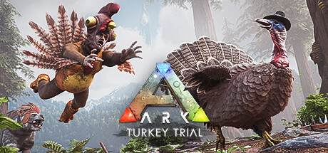

ARK: Survival Evolved

Stranded on the shores of a mysterious island, you must learn to survive. Use skill & cunning to kill, breed, & ride the Dinosaurs.Developed by Studio Wildcard, Instinct Games
About the game
Use your cunning and resources to kill or tame & breed the leviathan dinosaurs and other primeval creatures roaming the land, and team up with or prey on hundreds of other players to survive, dominate... and escape!
Dinosaurs, Creatures, & Breeding! -- over 100+ creatures can be tamed using a challenging capture-&-affinity process, involving weakening a feral creature to knock it unconscious, and then nursing it back to health with appropriate food. Once tamed, you can issue commands to your tames, which it may follow depending on how well you’ve tamed and trained it. Tames, which can continue to level-up and consume food, can also carry Inventory and Equipment such as Armor, carry prey back to your settlement depending on their strength, and larger tames can be ridden and directly controlled!